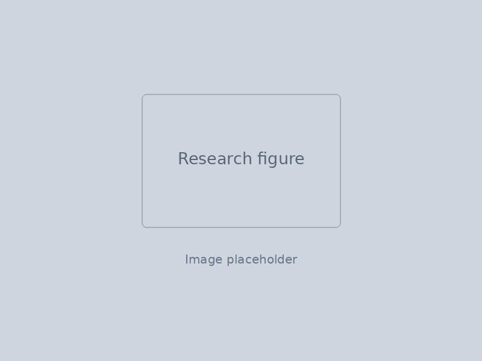

About me
I am a postdoctoral researcher at QMATH, University of Copenhagen, working on quantum error correction and fault-tolerant quantum computation.
Before moving to Copenhagen, I completed a PhD in theoretical condensed matter physics at the University of Cambridge, supervised by Robert-Jan Slager. My doctoral work focused on topological phases of matter, especially multiband Euler topology and its physical signatures.
I previously studied physics and mathematical and theoretical physics at the University of Oxford. Along the way I have also worked on temporal networks in computational biology and held research visits at UC Berkeley and the University of Tokyo.
Broadly, I am interested in places where geometry, topology and algebra impose concrete constraints on physical systems — from topological band structures to quantum codes.
- Postdoc · QMATH
- PhD · Cambridge
- BA & MMathPhys · Oxford

A small mathematical note
This site supports selectable LaTeX-style mathematics. For example, inline expressions such as \(\chi \in \mathbb{Z}\) and display equations such as
\[ k \leq \log_2(n+1) \]
are rendered as browser text rather than embedded images.